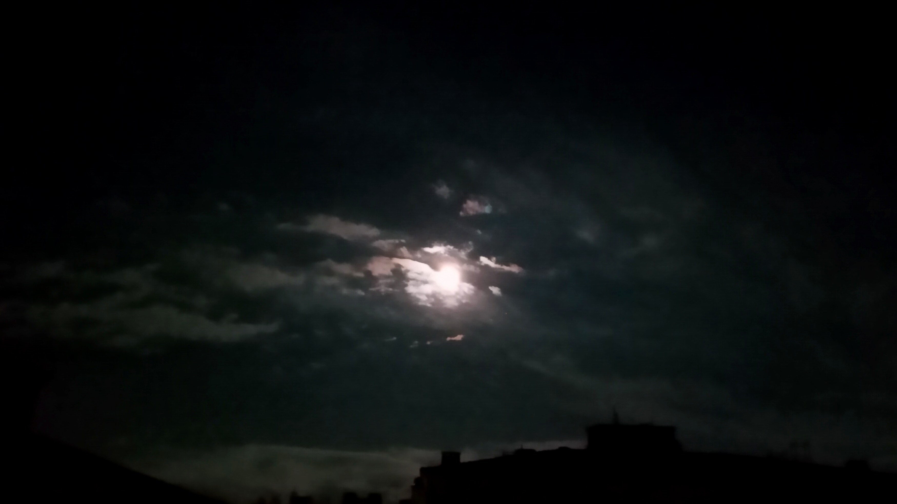

I AM BACK (YET AGAIN)
It was a few days back, after the midnight. Must be at least 3 A.M. It was one of those days where I felt like shit. Have you ever felt like someone else is controlling your body? It is something hard to explain. I wasn't myself. I was using my computer, doing some useless shit in the hopes of forgetting my existence for a short while. After hours and hours of sitting on my ass doing basically nothing, I stood up to light a cigarette. Turned off the lights and opened up my window. There was a full moon outside, directly in front of me. Don't remember seeing the moon this big before. It was so shiny. It was almost like it is staring at me. If I squint my eyes I could vaguely see a face even. It was raining all day and the sky was a little cloudy. I could feel the cold and moist breeze on my face. It was so refreshing and beautiful. The after-rain smell, cold oxygen-rich air, bright full moon. I stared at moon for a while. I was thinking how the life would be without a giant space rock revolving around the world. Funny how I never imagined that in my life before. Certain calendars would never exist. Sky would be less interesting during the night. Americans couldn't boast about putting a flag on moon. Neil Armstrong wouldn't say that famous sentence "That's one small step for a man, one giant leap for mankind". Maybe even certain species would not exist on earth. Culture would be a lot different for sure, plenty of ancient gods from ancient religions would not exist. Plenty of books, movies, poems written about moon would not exist. Maybe people would be a lot less interested in space as well.
Then I thought what if this would be the last moon I will ever see. What if moon magically disappears? Would we mourn for our shiny space rock? Would anyone care? Of course this would shock everyone because nothing disappears like that. But lets say aliens decided to buy our moon to put it into their planet's orbit and we really sold it to them. Would we regret? What would really change in our lives?
Then I thought, what if I die today? Would I regret not being able to see the moon once again? I would for sure. What made me think this way at the moment I don't know. I did not think about missing my favorite food, my favorite music, my favorite movie, my family and friends but I thought about a giant space rock. Crazy how little we appreciate things like these. Billions of years ago a giant celestial object misses the earth therefore it doesn't remove a huge chunk of material from earth and moon never exists. We would be living in a totally different world. Maybe even humankind would never exist. Who knows?
After all that thinking, I decided to take a picture. My stupid cellphone camera fucked everything up so I decided to edit the image but fucked it up even further and I ended up with this image below:
I guess this is the part I am gonna talk about where the hell I've been all that time. At least 2 months without an update. Plenty of things happened but very few changed. My downfall gained a little momentum. My mom lost her mind and stayed in a psych ward for a couple weeks. Our family was about to break apart. I used antidepressants for a short while. I suppose to graduate this year but I guess I need to explain my parents that It ain't gonna happen. Tried to find a job but got rejected every single time. Gained a little more weight I suppose, I don't look at mirrors so I couldn't really know. My back pain is back and my smoking addiction is out of control. I did not want to complain about shit like this all the time, so I decided I better stop writing. I did not completely stop writing though. I was writing things time to time, I have a few essays in reserve and I will share them in the future.
I was thinking about ending my life for real this time. I have had enough. I was scared of talking about this before because even thinking about it turns my stomach upside down. The idea of a bullet piercing through my skull an leaving me lifeless on the ground creeps me out. What a sight that would be. And the regret that comes after the fail. The uncertainty of such action. Not even sure if .32ACP would be enough to end my misery. I put the gun inside my mouth before, unloaded. I can still taste the metal. Even dry firing the gun made me feel uneasy.
Nothing is worse than death. Nothing. Even small things like looking at the sky and seeing all those bright stars and the moon, breathing in fresh air, hearing the sounds of birds in the morning, petting your cat, enjoying a meal, first coffee of the day, enjoying music are worth living for. Even if the sadness is the only feeling that has left inside you, it is better than not feeling at all. There is nothing that will be waiting for you after the death. What you get in this world is all you have. And life is pathetically short anyways. Better stick around for a little while to see what happens. What is the point of running towards death while death is coming to you already?